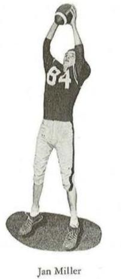
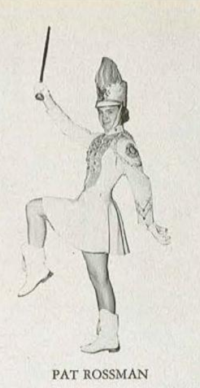
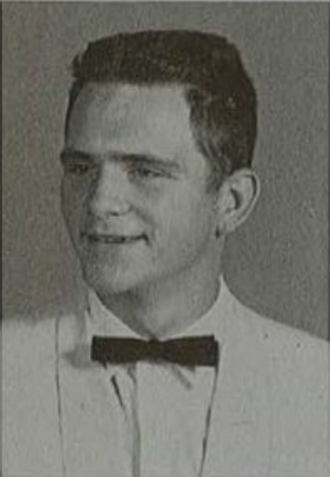

A note to the family
Hello everyone!
I have been trying to pass some time at night while working and tried to make/code a website. I thought it would be kind of fun to work on something about Granny and Papa and their history. There are a lot of things I found out about them that I never knew, and it was a lot of fun to be able to sort of put it together.
If something is being weird on this, I coded it wrong, so please let me know if something really seems off, or if an image is not loading, or if a link is not taking you to the proper destination. Go click on the tabs below and see what new things you can find out about Granny and Papa. I am working on another project surrounding them but thought this was fun to share with the family!
— Trevor
The High School Years
A look back at Granny and Papa's days at State College High.

State College High School




Both Granny and Papa attended State College High, but they were both missing when the time came for their junior-year photographs.


They both were involved in so many activities, and I really wanted to find out who was the most impressive of the two in high school. It took a lot of research to determine the winner, but once I found the information below, it really solidified that the most impressive of these two special people was determined on the basketball court.
Papa had been on the court for many years by the time they had reached State College High, but only one of them was an All-Star.

Across the Country We Go
From college days to new opportunities out west, the next chapters took the family across the country.

Undergraduate Years at Penn State

While Papa attended Penn State for his undergraduate degree, Granny learned her curiosity in technology, accounting, and typing (more on this shortly).
Graduate School at Colorado School of Mines
After graduating, they made a big move out west and settled at the Colorado School of Mines, where a graduate degree and PhD were earned.
Fun fact about the thesis titled Solvent Extraction of Metallic Anionic Complexes with a Quaternary Amine: without the amazing skills Granny learned, Papa could potentially still be typing this thesis today…
Professor at the University of Utah
Soon after graduation, the family moved again to Salt Lake City to begin a job at the University of Utah. After moving there, Papa collected what he thought was the world's largest collection of rocks and thought he had struck gold, but realized it was just chalcopyrite.
The Atkin Family Tree
A growing family, connected across generations. Tap a generation below to see the names.

- Pam & Lew Hancock
- Jenny & Rob Wilson
- Ginger & Dave Smith
- Calley Hancock
- Patrick & Chiaka Hofmann
- Trevor & Whitney Hofmann
- Brooke Hofmann
- Adam Wilson
- Ryan Wilson
- Tyler & Jordan Smith
- Ellie & Ethan Case
- Anne & Jonathan Elwart
- Timothy Smith
- Easton Case
- Eric Case
- June Elwart
- Parker Elwart
- Ashby Hofmann
- Leland Hofmann
- Steele Smith
This version groups names by generation. Once the exact parent-child relationships are confirmed, it can be turned into a connected tree where each person opens their own branch.